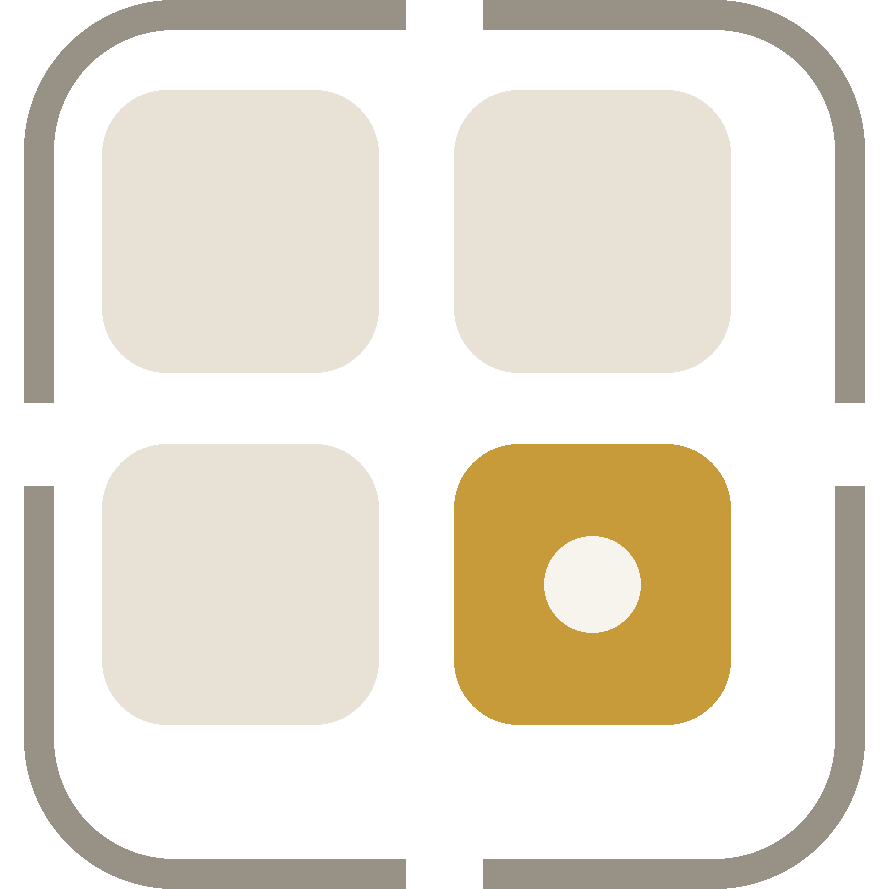

De bouwer werkt op de desktop
ClueBoard-levels bouw je op een groot scherm: het bord, de regels en
de details staan naast elkaar en dat vraagt ruimte en een muis.
Open deze pagina op een laptop of desktop.
Een scherm van minstens 1100 pixels breed werkt het prettigst.
Spelen kan wel gewoon op je telefoon.
Naar het menu